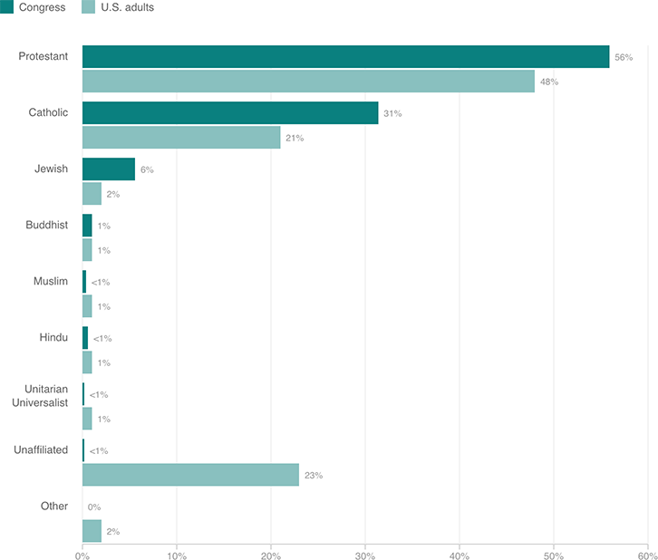

Christians Remain Overrepresented in Congress, While ‘Nones’ Are Underrepresented
One member of the new Congress is religiously unaffiliated, compared with more than 1 in 5 U.S. adults. Meanwhile, nearly 91 percent of new Congress members are Christian, compared with 71 percent of U.S. adults.
